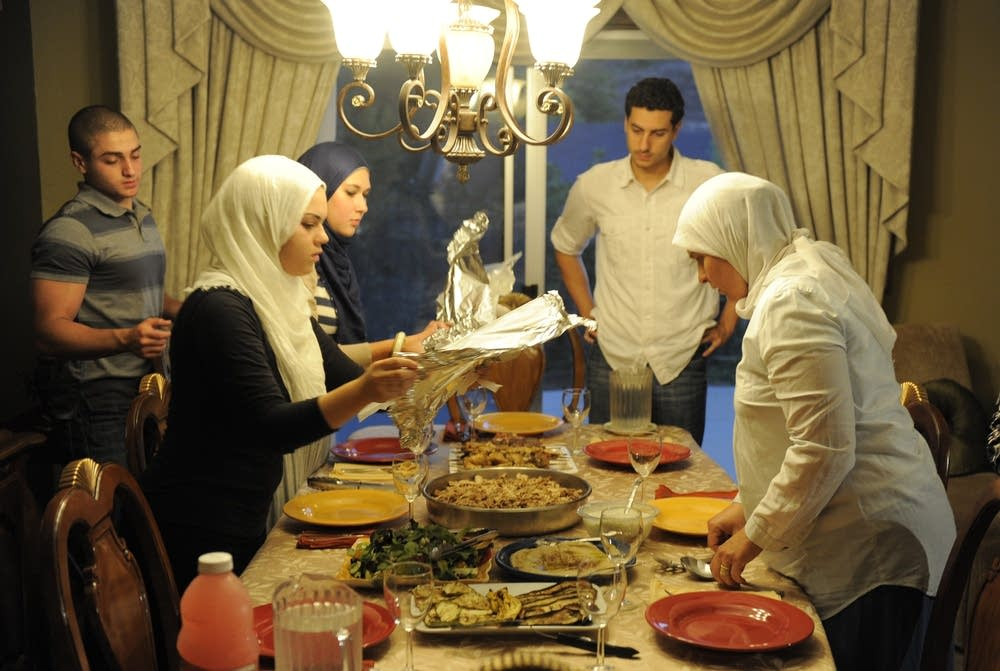
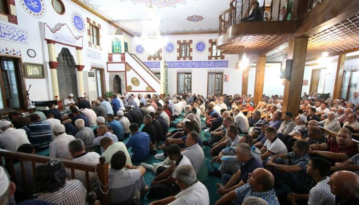
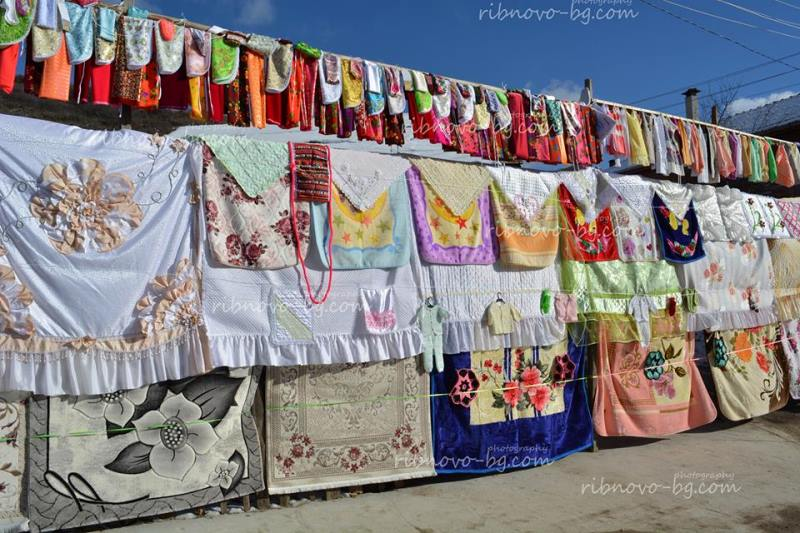
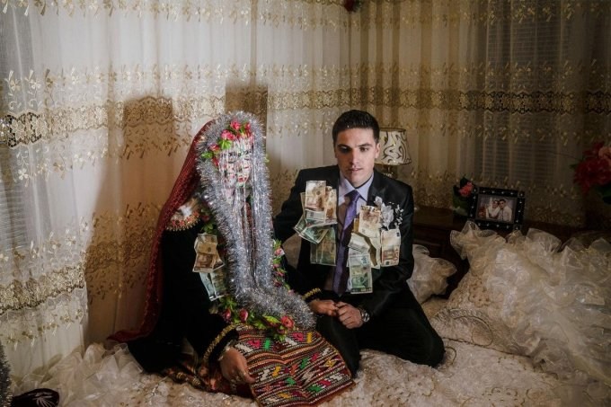
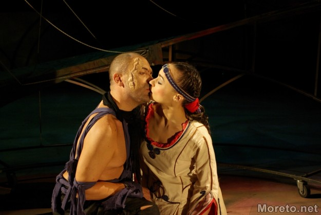

Гоце Делчев-Традиции и обичаи
Курбан байрам |
||
| Първо се принася в жертва агне или други жертвени животни и месото се приготвя за хранене или като дарение на бедните. Жертвените животни се наричат още курбани - овце, кози, крави и телета. Чете се специална молитва преди жертвоприношението. Курбан Байрам е 70дни след Рамазан Байрам и продължава 3 или 4 дни. Едната част от курбана се разпределя на нечетен брой парчета и се раздава на бедните, съседи и близки. Иска се прошка от по-възрастните членове на семейството, като се започва от най-старият. Най-малките членове на семейството се възнаграждават с пари или лакомства. |  | |
|  | Курбан байрамът е мюсюлмански празник на жертвоприношението в чест на приключването на хаджа, отбелязван на 10тия ден от месец "зул хидж" по мюсюлманския календар хиджра, в памет на жертвоприношението на пророка Ибрахим. Самото поклонение продължава около седмица, празникът на жертвоприношението бележи една от върховните ритуални практики. Тези, които празнуват празника у дома, правят церемония, подобна на тази, която се провежда на същия ден в Мека. | |
Традиционна сватбена церемония за Рибново
| Очите на булката са затворени, а лицето й е боядисано в бяло и украсено с ярки пайети. Но днес подобен сватбен ритуал може да се види само в затвореното общество на Рибново. Семейството на булката усърдно й събира чеиз, дрехи, юргани, покривки, чаршафи, възглавници, чорапи и килими. През една слънчева Неделя семейството закача всичкото това на три-метрово дървено скеле, издигнато специално за случая, до къщата на булката. Почти всичи от селото идват да видят изложеното. Но най-запомнящият се момент от церемонията е изрисуването лицето на булката. Това е много личен ритуал и на него присъстват само жените роднини. Лицето на булката се покрива с плътен слой бяла боя и после се декорира с цветни пайет. Дълго червено було покрива косата й, главата й се обгръща с гирлянди, а лицето й се забулва от сребристи нишки. Лицето на булката има право да го украсява само най-старата жена в селото, която се нарича гелина. Белият воал е заменен с червено було, към което добавят гирлянди. Докато гелината отива в новия си дом, върви със затворени очи и носи огледало. Младоженците са съпроводени от местни музиканти с традиционни зурни и тъпани. По време на цялата церемония покъщнината на семейството се излага на показ, за да види цялото село какво ще занесе булката със себе си. Младоженците са съпроводени от местни музиканти с традиционни зурни и тъпани. |  |  |
Обичаят “Змейова сватба ”
| Всяка година гоцеделчевското село Делчево прави обичаят “Змейова сватба”. Това е възстановката на традиционна делчевска сватба с народни носии. Чевства се два пъти годишно - по време на Трифон Зарезан и Еньовден. На този празник се изпълняват майсторки музикални изпълнения. Също така хората могат да се включват в хорото и да oпитват местните специалитети. Легендата по тези места разказва, че някога край селото имало много зъл змей. Той обаче се влюбил в местна девойка, която го преобразила и го направила добър с хората. Моминските обичаи, песните за змейове и сцена от пещера „Магура“ водят до заключението, че „сватбата“ и „любовта“ на Змея не са само метафора за мнима смърт на девойката, а действителен ритуал. |  |